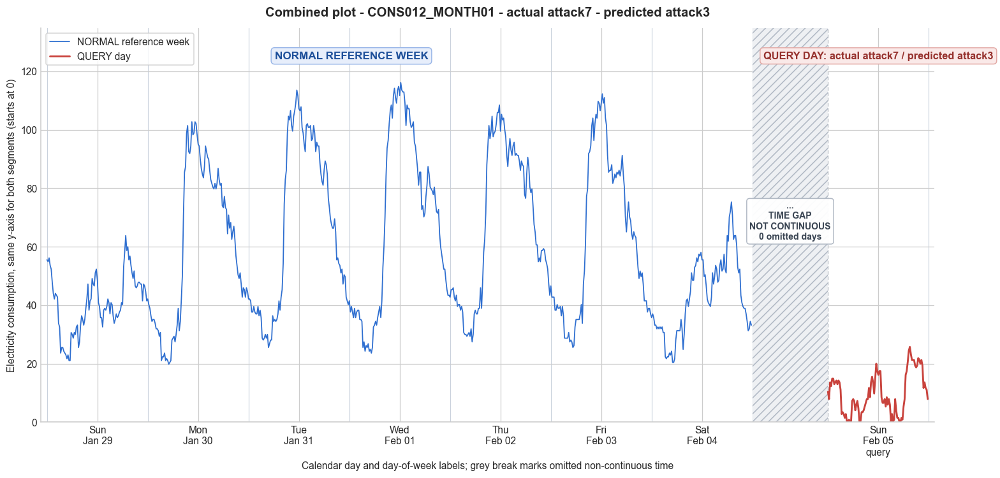

CONS012_MONTH01 · actual attack7 · predicted attack3
- Pair
- CONS012_MONTH01
- GT
- attack7
- Prediction
- attack3
- Binary GT
- attacked
- Binary Prediction
- attacked
- Source
- E010
- Parse
- stored
- Date
- 2012-02-05
- Weekday
- Sunday
- Latency
- 3.42 min
- Tokens
- 12344

Final output
Classification: - Manipulated Identified_Attack: - Most Likely: Attack 3 - Confidence: High - Reasoning: The query day is a Sunday (same weekday as reference Day 0). Reference Sunday consumption shows a clear diurnal pattern with minimum 21.06, maximum 63.82, mean 40.58. The query day has min 0.00, max 25.72, mean 9.85 – a drastic reduction (~76% mean drop) and many near‑zero readings. The shape is distorted but still retains a faint diurnal outline (morning dip, evening peak), indicating the original profile is partially preserved yet severely altered per sample. This matches Attack 3 (per‑sample random scaling) where each original value is multiplied by an independent random factor in (0,1). Many samples become extremely small (e.g., 0.00‑0.84), while others retain moderate magnitude (up to 0.4× original peak). Top alternatives ruled out: - Attack 2 (on‑off attack): would produce contiguous blocks of exact zeros. Here zeros are sparse, not in long blocks, and many “zero” intervals actually show tiny positive values (0.20, 0.84), not exact 0.00. - Attack IEEE: alternates between reporting real consumption and zero. The non‑zero intervals would be close to the reference day’s values, but here the highest reading is only 25.72 vs. the original peak of 63.82, and pseudo‑zero intervals are not exact zeros. Scaling, not switching, is the dominant effect. Attack_Behavior_Explanation: - Each 15‑minute consumption sample of the day is multiplied by a different random factor between 0 and 1. This factor varies independently for every reading, causing some intervals to be heavily suppressed (near zero) while others are only partially reduced. - Impact: the overall magnitude is sharply reduced (mean drops from ~40.6 to ~9.9). The original trend is broken but still faintly recognizable; the attack introduces high‑frequency variability that distorts both trend and amplitude. - Possible technical causes: meter bypass with intermittent magnetic interference, reverse current injection causing random scaling of reported values, or false data injection where the attacker applies per‑sample multiplicative tampering.
Prompt
You are a domain expert in smart grid security and electricity theft analysis, with deep knowledge of non-technical loss (NTL) attack patterns in smart meters. You are given: 1. A plot of one week of original (normal) energy consumption for a smart meter, provided as context for the customer's typical consumption behavior. 2. A plot of one day of energy consumption for the same smart meter, which may or may not be manipulated. Below are common attack types, each defined by how consumption values are altered, their impact on magnitude and trend, and their possible technical causes. Attack 0: Generated by replacing all electricity consumption samples with zero values for the entire observation duration. Simulates a scenario where no energy usage is reported at all. May be caused by a total meter bypass or severe meter malfunction. Completely eliminates both the trend and magnitude of the consumption profile. Attack 1: Multiplies the actual energy consumption by a constant random value between (0,1). The lower the factor, the higher the severity. Can be triggered by meter bypass, magnetic interference, reverse current, and false data injection. The consumption trend remains the same but the magnitude is uniformly reduced. Attack 2: Generated by replacing consumption samples with zeros for a random duration. Also known as an on-off attack. Can be caused by full meter bypass, false data injection, and reverse current. Changes both the trend and amplitude. Attack 3: The actual consumption is multiplied by different random factors between 0 and 1, with a unique factor per sample. Similar to Attack 1 but the scaling factor varies per reading. Caused by meter bypass, magnetic interference, and reverse current. Changes both the trend and amplitude. Attack 4: Simulates energy theft over a randomly selected period within the observation window. All measurements in that period are reduced. Caused by meter bypass, magnetic interference, reverse current, and false data injection. Changes both the trend and amplitude. Attack 5: Each sample is replaced by a false value obtained by multiplying the average normal consumption by a random variable between 0 and 1, with a different variable per sample. Caused by false data injection. Produces a completely different pattern from the original consumption profile, changing both trend and magnitude. Attack 6: A random cut-off point is selected and all consumption values above it are replaced by that cut-off value. The attacker avoids exceeding a predefined maximum limit. Mainly caused by false data injection. Changes both the trend and amplitude. Attack 7: A random cut-off point is subtracted from each sample; if the result is negative, zero is reported. Similar to Attack 6 but replaces exceeding values with zero instead of the cut-off point. May be caused by false data injection or total meter bypass. Does not change the trend but reduces overall consumption. Attack 9: All samples are replaced by the average daily energy consumption, resulting in a flat constant profile. Easily detectable because constant consumption does not reflect normal customer behavior. Caused by false data injection. Eliminates all trends. Attack 10: Reverses the consumption pattern without reducing the total amount. Applicable when the electricity company uses time-varying pricing, allowing the attacker to shift high consumption to off-peak periods. Caused by false data injection. Changes the trend without decreasing total consumption. Attack 12: The attacker replaces their consumption pattern with that of a lower-consuming user. The legitimate user unknowingly pays the adversary's electricity bill. Caused by false data injection. Attack IEEE: For each 15-minute interval across the entire day, the consumer either reports the actual electricity consumption or substitutes it with zero. The result is a profile where some intervals reflect real consumption while others are zeroed out, creating an irregular pattern across the full day. May be caused by false data injection. Changes both the trend and amplitude. Given the two plots, determine: 1. Whether the day is attacked or original - compare the flagged day against the normal week and assess whether the consumption pattern is consistent with normal behavior or shows signs of manipulation. If the day is consistent with the customer's typical consumption behavior, classify it as original and provide no further analysis. If manipulation is detected, proceed to point 2. 2. Which attack type this most likely is - identify the single most probable attack and justify your choice based on how the flagged day deviates from the normal week. 3. The behavior of the identified attack - explain how the consumption values are manipulated, their impact on magnitude and trend, and the possible technical causes behind this type of attack. Output Format: Classification: - Original | Manipulated Identified Attack: (fill only if manipulated) - Most Likely: Attack X - Confidence: High | Medium | Low - Reasoning: Why it matches Attack X and why Attack Y and Attack Z were ruled out (list top 2 alternatives considered) Attack_Behavior_Explanation: (fill only if manipulated) - How consumption values are manipulated relative to the normal week - Impact on magnitude and trend - Possible technical causes
Reasoning content
We are asked to analyze a smart meter's consumption data: a reference week (7 days, each 96 readings) and a query day (DAY_ID=0) with 96 readings. We need to determine if the query day is attacked (manipulated) or original. If manipulated, identify the most likely attack type from the given list, with reasoning, and explain the attack behavior. First, let's understand the normal consumption pattern from the reference week. The week spans Day 0 to Day 6. Days: Sunday to Saturday? Metadata: Day 0 dow=6 (Saturday? Actually dow=0 Mon..6 Sun, so 6=Sunday? Wait: dow=0 Mon-Sun, so 0=Monday, 1=Tuesday, ..., 6=Sunday). Reference week Day 0: dow=6 => Sunday. Day 1: dow=0 => Monday. Day 2: dow=1 => Tuesday. Day 3: dow=2 => Wednesday? Actually 2-> Wednesday? Let's check: if 0=Monday, then 1=Tuesday, 2=Wednesday, 3=Thursday, 4=Friday, 5=Saturday, 6=Sunday. So Day 0: Sunday, Day 1: Monday, Day 2: Tuesday, Day 3: Wednesday, Day 4: Thursday, Day 5: Friday, Day 6: Saturday. The query day is DAY_ID=0, dow=6 => Sunday again. And cal_month=2 (February). So it's the same day of week (Sunday) one week later? Day 0 ref was Sunday Feb 5? Metadata says ref week Day 0 date=2012-02-05 (Sunday). Query day Day 0: cal_month=2, dom=7, so date=2012-02-12, another Sunday. So we can compare the query Sunday with the reference Sunday (Day 0) and also see if there is a weekly pattern. From per-day statistics: Reference week: Day 0 (Sunday): min=21.06, max=63.82, std=9.88, mean=40.58 Day 1 (Monday): min=19.78, max=102.74, mean=60.58 Day 2 (Tuesday): min=25.53, max=113.59, mean=67.13 Day 3 (Wednesday): min=23.61, max=116.15, mean=68.50 Day 4 (Thursday): min=27.44, max=108.49, mean=67.66 Day 5 (Friday): min=25.53, max=112.32, mean=63.52 Day 6 (Saturday): min=20.42, max=75.30, mean=42.96 So weekends (Sunday and Saturday) have lower consumption, with max around 63-75 and mean ~40-43. Weekdays have higher max ~100-116, means ~60-68. Query day (Sunday): min=0.00, max=25.72, std=7.08, mean=9.85. This is drastically lower than the reference Sunday (min 21.06, max 63.82, mean 40.58). The min is zero, and max is 25.72 vs 63.82. The mean is only about a quarter. So clearly something is wrong. The query day is a Sunday, which should have lower but not extremely low consumption. The pattern is highly suspicious. Let's analyze the raw readings. Reference Sunday (Day 0) shows typical pattern: starts around 55 at midnight, drops to low 20s during early morning (2-5am), then rises to peak around 60 in late afternoon/evening. See Day 0: first reading: 55.52, then dropping: 54.88, 56.16, 53.61, 52.33, 47.86, etc. By reading ~20-30, values around 21-25. Then rises: after 30, values 30s, 40s, peaks around 60s. So a typical diurnal pattern with night low, daytime high. Query day (Sunday): starts 10.41, then 7.86, 13.60, 12.32, 14.87... Then dips to very low values around reading 15-23: 2.75, 3.39, 2.75, 1.47, 2.75, 0.20, 0.20, 0.84, 0.20, 0.20, then 7.22, 7.86, 7.22, 4.03, 5.94, 7.22, 4.66, then 0.00, 0.20, then 3.39, 3.39, 4.03, 5.30, 6.58, 7.86, 7.86, 11.68... So there are many zero or near-zero readings (0.00, 0.20, 0.84). The maximum ever reaches 25.72 (reading around 84? Actually reading 84: 25.72, then 23.17, etc). The overall pattern: some small positive values interspersed with zeros. The pattern is not a constant zero, it has some variability, but all values are drastically reduced. The presence of zeros suggests a possible on-off attack or zeroing. Now, let's list attacks: Attack 0: all zeros -> not this, because there are non-zero values (max 25.72). Attack 1: multiply by constant between 0 and 1. If it was constant scaling, we would see the original pattern shape but scaled down. Here the shape is not preserved: we see zeros at times where original would have non-zero (original early morning had ~21-25, but query day has 0.20, 0.20). Also, some periods have high values relative to original? Could it be scaled? Let's compare ratio. If we take the original Sunday readings and multiply by a constant ~0.25, we might get means around 10. But the query day has many zeros that don't match scaled pattern. For example, original Sunday at early morning: min 21.06, mean 40.58. Scaling by 0.24 gives min ~5, not 0.20. But 0.20 could be scaled from a very low original? Original min is 21.06, times 0.0095 gives 0.20. That's not a constant factor. So attack 1 unlikely. Attack 2: on-off attack, zeros for random duration. The query day has many zeros interspersed: e.g., reading 20:0.20, 21:0.20, 22:0.84, 23:0.20, 24:0.20, then later reading 30:0.00, 31:0.20, then later reading 60:0.20, 62:0.20, 63:0.84, 64:7.86? Actually 63:0.20, 64:0.84, then 69:0.20, 70:0.00. So there are scattered zeros and near-zeros. Could this be an on-off attack where some intervals are zeroed? Attack 2: "replacing consumption samples with zeros for a random duration". This would produce blocks of zeros. Are there blocks? Look: readings 19-21? Let's list the sequence with indices (0-95): 0:10.41, 1:7.86, 2:13.60, 3:12.32, 4:14.87, 5:14.87, 6:12.96, 7:13.60, 8:14.24, 9:12.96, 10:14.24, 11:13.60, 12:11.05, 13:2.75, 14:3.39, 15:2.75, 16:1.47, 17:2.75, 18:0.20, 19:0.20, 20:0.84, 21:0.20, 22:0.20, 23:7.22, 24:7.86, 25:7.22, 26:4.03, 27:5.94, 28:7.22, 29:4.66, 30:0.00, 31:0.20, 32:3.39, 33:3.39, 34:4.03, 35:5.30, 36:6.58, 37:7.86, 38:7.86, 39:11.68, 40:8.49, 41:13.60, 42:15.51, 43:13.60, 44:9.77, 45:14.87, 46:19.98, 47:17.43, 48:16.15, 49:17.43, 50:17.43, 51:8.49, 52:6.58, 53:6.58, 54:7.86, 55:5.30, 56:8.49, 57:5.94, 58:7.86, 59:5.94, 60:0.20, 61:2.75, 62:0.20, 63:0.84, 64:7.86, 65:4.03, 66:1.47, 67:1.47, 68:0.20, 69:0.00, 70:1.47, 71:0.84, 72:5.30, 73:7.86, 74:16.15, 75:17.43, 76:20.62, 77:24.45, 78:25.72, 79:23.17, 80:21.26, 81:21.26, 82:21.26, 83:19.34, 84:18.70, 85:19.34, 86:21.89, 87:21.26, 88:19.98, 89:21.26, 90:19.34, 91:11.68, 92:13.60, 93:11.68, 94:11.05, 95:7.86 We see a long stretch of zeros/near zeros? Specifically, readings 18-22 are 0.20, 0.20, 0.84, 0.20, 0.20. Then after 23 we have 7.22 etc. Then at 30:0.00, 31:0.20. Then 60:0.20, 61:2.75, 62:0.20, 63:0.84, then 64:7.86, 66:1.47, 67:1.47, 68:0.20, 69:0.00, 70:1.47, 71:0.84. So zeros are interspersed but not in long continuous blocks. They appear as individual zero/low values among small positives. Attack 2 says "for a random duration" which would likely cause longer zero blocks. Here we have single zeros or very short (maybe 2-3 intervals). Not clearly a block of zeros. Attack 3: multiply each sample by a different random factor between 0 and 1. This would give a scaled but noisy version of the original shape. The original shape for Sunday had a clear diurnal pattern with low 20s at night and 60s peak. Scaled by random factors would produce many values around proportional to original, but with randomness. Here we have many zeros, which would only occur if the factor is exactly 0 for those samples. That is not typical for "different random factors" unless it includes zeros. The description says "multiplied by different random factors between 0 and 1, with a unique factor per sample." It could include 0. But then the non-zero values would be spread. Could the original Sunday be multiplied by factors to give these numbers? For example, original early morning values around 21-25. Multiply by ~0.01 to get 0.20? That's possible if factor is drawn from a distribution that includes very small numbers. But then later peak values around 60 would become very small too (0.6 to maybe 15). But in query day, we see peaks up to 25.72. If factor is around 0.4, then 60*0.4=24, matches 24.45, 25.72. But then early morning 21*0.4=8.4, but we see 0.2. So factor would have to be very small for those, not random across the whole day but per sample. That means some samples have very low factors (near zero), others have moderate. This is attack 3: different factor per sample. This could produce zeros if factor exactly 0. But is that plausible? Attack 3 says "The actual consumption is multiplied by different random factors between 0 and 1, with a unique factor per sample." So it's exactly per sample scaling, which could produce zeros if a factor is 0. So this is plausible: some samples are scaled to near zero, others are scaled by larger factors. Attack 4: "Simulates energy theft over a randomly selected period within the observation window. All measurements in that period are reduced." Reduced how? Not specified. "All measurements in that period are reduced." How much? Probably by a factor or subtraction. But it only applies to a period, not the whole day. The query day shows reduction throughout the entire day, not just a period. So unlikely. Attack 5: Each sample replaced by a false value obtained by multiplying the average normal consumption by a random variable between 0 and 1, with different per sample. This would produce values unrelated to the original pattern, just random around a scaled average. Here the pattern still bears some resemblance to a daily pattern? Look at query day: it has a low early morning (near zero), then a slight increase, then a peak in the late afternoon/evening. The original Sunday had a morning dip and evening peak. The query day shows a pattern: from reading 0-12, values around 10-14, then a dip to near zero around 13-22, then up to 7-8 around 23-25, then dip again, then very small values, then a slight rise, then a clear peak from around 74-90 reaching 20-25, then drop. This shape is somewhat similar to original? Original Sunday: values high at start (55), then dip to low 20s at reading ~13-25 (check Day 0: reading 13=23.61, 14=25.53, 15=25.53, 16=24.25, 17=23.61, 18=22.97, 19=21.70, 20=22.97, 21=21.06, 22=21.06, 23=30.63, 24=29.99, 25=28.72, 26=30.63, 27=29.99, 28=32.55, 29=33.18, 30=25.53, 31=27.44... So original had a dip then a rise. But the magnitudes are completely off. The pattern of dips and peaks may be roughly aligned? Original dip was around readings 13-22 (values 21-25), but query day dip is at readings 13-22 (mostly 0-3). Original had a rise to 30s around 23-31, then later a larger peak. Query day has a small rise to 7-8 in 23-25, then dip again, then a peak later. The shape is not exactly preserved; it seems like certain periods are zeroed while others are scaled differently. Could be attack 3, or maybe attack 2, or attack IEEE. Attack 6: "A random cut-off point is selected and all consumption values above it are replaced by that cut-off value." This would truncate high values, but low values remain. Here many low values are also forced to zero or very low, so not just capping high. Attack 7: "A random cut-off point is subtracted from each sample; if the result is negative, zero is reported." This would reduce all values by a constant. For example, if cut-off is 40, original Sunday values: 55 -> 15, 21 -> 0, etc. Would produce many zeros where original is below 40. Check: original Sunday mean ~40.58. If we subtract, say, 35, then values above 35 become positive, values below become zero. Original Sunday had many values below 35 (the early morning dip). If we subtract 20, then most would be >0, but we might not get many zeros. Let's test: query day has min 0.00. Could it be subtraction? For example, if we subtract 20 from original Sunday, we'd get min = 21.06-20=1.06, but query day has 0.00. Subtract 21.06, min becomes 0, but then other values would be shifted more. Let's see: original min 21.06, subtract 21.06 gives 0 for that sample, but then a sample with original 63.82-21.06=42.76, but query day max is 25.72, so not that. If we subtract a larger number, say 38, then many become zero, and max becomes 63.82-38=25.82, which is close to 25.72. And mean? Not sure. Check: if we subtract 38 from original Sunday values, we'd get 55.52-38=17.52, 54.88-38=16.88, 56.16-38=18.16, etc. The query day values early are around 10-14, not 17-18. So not constant subtraction. Could be subtraction with a per-sample randomness? Attack 7 is just subtract a fixed cut-off, no randomness. So unlikely. Attack 9: all samples replaced by average daily energy consumption (flat). Not flat here, there is variation. Attack 10: Reverses the consumption pattern without reducing total amount. Would preserve total, but here total is drastically reduced (mean 9.85 vs 40.58). So not. Attack 12: replaced with lower-consuming user's pattern. That would not necessarily have zeros; it would be a different but realistic pattern. The presence of many zeros suggests not just another user, but an attack that zeroes some readings. Attack IEEE: "For each 15-minute interval across the entire day, the consumer either reports the actual electricity consumption or substitutes it with zero. The result is a profile where some intervals reflect real consumption while others are zeroed out, creating an irregular pattern across the full day." This fits very well. The query day has many intervals with zero or near-zero (could be zeroed) and other intervals with positive values that might be real consumption. The real consumption intervals would match the original pattern's values, but we see that the non-zero intervals are still lower than original? Let's compare: query day has a peak around 25.72 at reading 78. Original Sunday at reading 78: let's check Day 0 reading 78: Day 0 list: reading 78 is 59.99? Let's count indices: Day 0 readings given: 0-95. I'll copy Day 0 and label approximate index by counting. Day 0: 0:55.52, 1:54.88, 2:56.16, 3:53.61, 4:52.33, 5:47.86, 6:44.03, 7:42.12, 8:44.03, 9:43.40, 10:42.76, 11:33.82, 12:32.55, 13:23.61, 14:25.53, 15:25.53, 16:24.25, 17:23.61, 18:22.97, 19:21.70, 20:22.97, 21:21.06, 22:21.06, 23:30.63, 24:29.99, 25:28.72, 26:30.63, 27:29.99, 28:32.55, 29:33.18, 30:25.53, 31:27.44, 32:33.18, 33:36.38, 34:35.10, 35:33.18, 36:35.10, 37:38.93, 38:42.12, 39:47.22, 40:38.29, 41:41.48, 42:42.12, 43:49.14, 44:47.22, 45:46.59, 46:51.05, 47:52.33, 48:48.50, 49:40.84, 50:39.57, 51:35.74, 52:35.74, 53:32.55, 54:38.29, 55:38.93, 56:38.29, 57:39.57, 58:42.12, 59:40.84, 60:37.01, 61:40.84, 62:40.20, 63:36.38, 64:33.82, 65:35.10, 66:37.01, 67:35.74, 68:36.38, 69:37.65, 70:38.29, 71:40.84, 72:40.20, 73:52.97, 74:58.07, 75:63.82, 76:58.71, 77:59.99, 78:55.52, 79:56.80, 80:53.61, 81:51.05, 82:49.14, 83:51.69, 84:46.59, 85:45.95, 86:46.59, 87:47.86, 88:47.86, 89:47.22, 90:47.22, 91:41.48, 92:47.22, 93:46.59, 94:44.67, 95:41.48 So original reading 78: 55.52. Query day reading 78: 25.72. So if it were IEEE where real consumption is reported in some intervals, we would expect exactly original values. 25.72 is not close to 55.52. But maybe the real consumption is not from the same Sunday but from another day? Or maybe there is scaling on those intervals? The IEEE attack is zero or real, no scaling. So this mismatch suggests maybe it's not simply IEEE with zeroing. However, it could be that the "real consumption" intervals are not from this reference Sunday but from a different day's pattern or scaled? The description of IEEE says "the consumer either reports the actual electricity consumption or substitutes it with zero". So actual means actual at that moment. But the query day is a different day (one week later), so consumption might be similar but not identical. Could 25.72 be a plausible actual consumption on that Sunday? The original Sunday peak was 63.82, so 25 is still low. But maybe the actual consumption was lower that day? It's possible, but then the zeroed intervals should be clearly zero, and non-zero intervals should match typical values. The zeroed intervals: readings 18-22 are 0.20, 0.20, 0.84, 0.20, 0.20. Those are close to zero but not exactly zero; they are 0.20, 0.84. That could be measurement noise if the meter reports near-zero? Or it could be the "replace with zero" but with some small residual? The IEEE attack says "substitutes it with zero", so exact zero. Here we have 0.00 in some places, but also 0.20, 0.84. So not pure zero. That suggests maybe it's not IEEE. Attack 2: on-off attack with zeros for random duration, but zeros might have noise? Usually zero means zero. Attack 3: random factor per sample, could yield very small numbers. Given that we see many values that are very small but not exact zero (0.20, 0.84, etc.), attack 1 (constant multiplier) would not produce those if the multiplier is constant, but if it's a very small multiplier, say 0.01, then a 20 becomes 0.2, 84 becomes 0.84. That could be a constant very small multiplier. Let's test: if multiplier is 0.01, original 55.52 -> 0.5552, not 10.41. So not constant. What about attack 4: reducing in a period. The query day seems to have reduction throughout, not just a period. So the most likely is Attack 3: each sample multiplied by a different random factor. That can yield a mix of very low numbers and moderate numbers. The pattern would still loosely follow the original shape because large original values get larger scaled values on average if factor is unrelated. However, the factor per sample is random, so the shape is distorted. For example, original low morning (20s) could be scaled by small factors to near zero, and later peaks scaled by larger factors to 20s. This seems plausible. Alternatively, could be Attack 2 with zero replaced by noise? Unclear. Let's consider the specific per-day statistics: query day min=0.00, max=25.72, mean=9.85. Std=7.08. The original Sunday had std 9.88, mean 40.58. Scaling each sample by a random factor uniformly between 0 and some max would reduce mean and std. If factors are random independent of original, the mean would be original_mean * mean_factor. 9.85/40.58 ≈ 0.2426. So the average factor is about 0.24. The max factor could be higher, e.g., to get max 25.72 from original max 63.82, factor ~0.403. So factors range up to 0.4, with some near 0. So this could be Attack 3 with factors drawn from a distribution with many small values. But Attack 3 is "multiplied by different random factors between 0 and 1, with a unique factor per sample." So the factor is random per sample. That matches. Now, could it be Attack IEEE? That would produce some intervals with actual consumption (which should be similar to normal Sunday) and others with zero. But the actual intervals we have are consistently lower than normal, not matching. And the near-zero intervals are not exactly zero. So IEEE less likely. Attack 2: on-off attack with zeros. If zeros are exact, we have only a few exact zeros (0.00 at 30 and 69). Most are 0.20, 0.84. So not exact zeroing. Attack 5: replace with average day consumption * random. That would give values unrelated to daily pattern, but here we see some diurnal pattern, so likely not. Attack 0,1,4,6,7,9,10,12 are ruled out. Top candidates: Attack 3 and maybe Attack 2. Attack 2 is less likely because the "zeros" are not exact and not in contiguous blocks. So Attack 3 is the best fit. Now, let's verify: In Attack 3, the consumption values are multiplied by different random factors between 0 and 1 per sample. This reduces magnitude and distorts trend. Cause: meter bypass, magnetic interference, reverse current, false data injection? The description says "Caused by meter bypass, magnetic interference, and reverse current. Changes both the trend and amplitude." That fits. Confidence: High? The drastic reduction and presence of near-zero values strongly suggests a random scaling attack. The alternative of on-off attack with noise is less typical. So I'll classify as Manipulated, Attack 3, High confidence. Now, output format required: Classification: Original | Manipulated, then if manipulated, Identified_Attack (Most Likely, Confidence, Reasoning) and Attack_Behavior_Explanation. Reasoning should include why it matches Attack 3 and why other attacks (top 2 alternatives) were ruled out. I'll mention Attack 2 (on-off) because of zeros, but ruled out because zeros not contiguous and not exact; Attack IEEE considered because of zero/non-zero pattern, but values in non-zero intervals are too low and zeros not exact. Attack_Behavior_Explanation: describe manipulation, impact, possible causes. Let's craft the final answer.